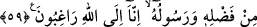

beyan edilmektedir.
et-Te’vîlâtü’n-Necmiyye’de ifade edildiğine göre “nifak”, insanın zâhirini İslâm’ın
rükünleri ile tezyin ederken bâtınını îman nurlarından tecrid etmektir. İman nurundan
tecrid edilmiş bir kalb, içinde taşıdığı dünya sevgisi sebebiyle küfür karanlığı ile
müzeyyen olur. Sadece dünyalık şeyleri elde ettiğinde râzı olur, dünyayı kaybettiğinde
kızar.
Sa‘dî der ki:
Dost aslâ dosttan ayrılmaz
Ben onun isteğine gönül bağladım
Çağırırsa huzûra, lütfu bilir
Dergâhından kovarsa, kahrı bilir
59. Eğer onlar Allah ve Rasûlü’nün kendilerine verdiğine râzı olup, “Allah bize
yeter, yakında Allah bize lütfundan verecek, Rasûlü de. Biz yalnız Allah’a rağbet
ederiz, (yalnızca) O’ndan umarız.” deselerdi (daha iyi olurdu).
“Eğer onlar Allah ve Rasûlü’nün kendilerine verdiğine râzı olup” yâni Rasûlullah
(s.a.)’in kendilerine verdiği zekatlara -az bile olsa- gönül hoşnutluğu ile rızâ
gösterseler, demektir. Burada “Allah” lafzı, ta‘zim için ve Peygamber Efendimiz
(a.s.)’ın yaptıklarının Yüce Allah’ın emriyle olduğuna dikkat çekmek için zikredilmiştir.
Şu halde O’na emredilen hikmete ve doğruya muvâfık olduğu için O’na itiraz sözkonusu
olamaz.
“Allah bize yeter” Allah’ın bize olan lütfu, ihsânı ve bizim için taksim ettiği şey bize
kâfîdir. Çünkü sahip olduğumuz her şey O’nun katından bir ihsandır. Onu kazanmada
bizim dahlimiz olsun olmasın farketmez. “yakında Allah bize lütfundan” bundan başka
bağışlar “verecek, Rasûlü de” bugün bize verdiğinden daha fazlasını verecek. “Biz
yalnız Allah’a rağbet ederiz, (yalnızca) O’ndan” lütuf ve keremiyle bizi zengin
etmesini “umarız.” deselerdi” elbette kendileri için daha hayırlı olurdu.
Kısmete rıza göstermek, sevince sebep olur. Ona sızlanmak ise sıkıntıya sebeptir.
Sülemî, İbrâhim Edhem’den şöyle nakleder: Aza kanaat eden kimse gam ve üzüntüden
kurtulur.
Verilene râzı ol, kaşını çatma
Sana ve bana seçme hakkı bırakılmamıştır